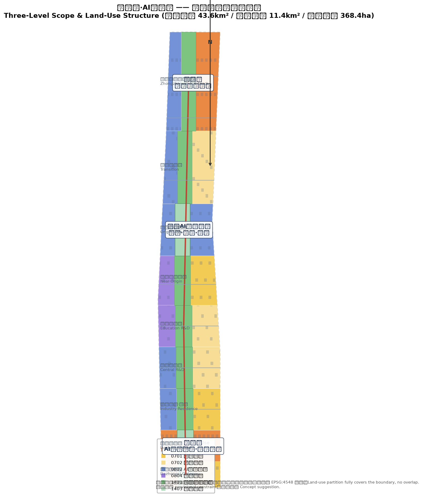
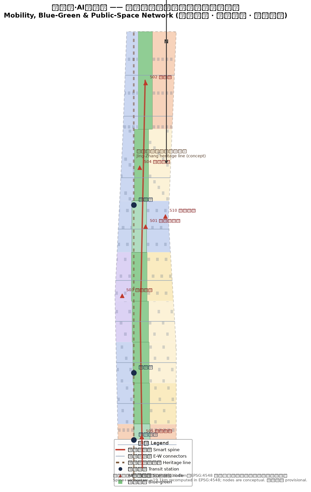
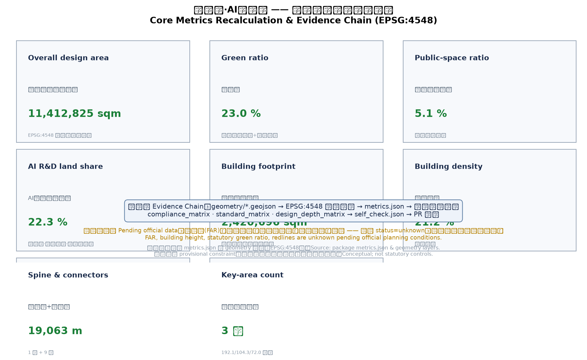

New Jing-Zhang AI Innovation Belt: From the Centennial Zigzag Railway to a Human-Centered AI City
Taking the self-reliance spirit of the zigzag railway as its origin, the proposal reshapes the Jing-Zhang Heritage Park into a north-south 'human-centered AI public spine', with Zhongzhiyuan, the Beijing AI Origin Community and Dazhongsi as the three cores, and the Zhongguancun technology-service wing and Xiaoyuehe scenario wing as the two wings, forming an 'one-spine three-cores, four-belt two-wings, multi-node network' AI innovation belt.
New Jing-Zhang AI Innovation Belt: From the Centennial Zigzag Railway to a Human-Centered AI City
Design Basis and Source List
This proposal takes the Qualification Pre-Announcement for the International Urban Design Open Call of the Centennial Jing-Zhang AI Innovation Belt (issued by the Haidian Branch of the Beijing Municipal Commission of Planning and Natural Resources) as its primary basis Source Standard. The announcement defines three planning levels (coordinated research area, approx. 43.6 km2; overall design area, approx. 11.4 km2; key detailed-design area, approx. 368.4 ha), three key areas (Zhongzhiyuan AI Self-Reliance Acceleration Area, approx. 192.1 ha; Beijing AI Origin Community, approx. 104.3 ha; Dazhongsi AI Industry Cluster, approx. 72 ha), and the three positioning statements "Centennial Jing-Zhang culture belt, urban AI living-experience belt, and AI-integrated innovation belt" Source.
The Agent Open-Call Taskbook is the basis for the naming system, AI scenarios, user personas, pilgrimage landmarks, cultural narrative, and long-term operations Source Standard. The taskbook requires all agent outputs to remain open co-creation suggestions that neither replace statutory planning nor constitute government determinations; every spatial proposal in this document follows that boundary Source.
The proposal follows the Measures for the Administration of Urban Design (MOHURD) on coordinating public space, building height, massing, style, color, and city character Standard, and applies the Urban Design Technical Guidelines and other professional standards to organize design depth Standard. Land-use classification follows the Guideline for Land Use Classification of Territorial Spatial Survey, Planning and Use Control (Ministry of Natural Resources) Standard; composition also references the Beijing Master Plan (2016-2035) positioning of Haidian innovation districts and the protection of the "Three Hills and Five Gardens" cultural heritage Source.
As of the submission date, no official precise boundary or official key-area polygons are available in the repository. This proposal uses the maintainer-registered provisional rough boundary and key-area polygons in brief/site-package/geometry/provisional_boundaries.geojson Source Source. All geometry is tagged geometry_role="provisional_constraint", official_boundary=false, boundary_precision="provisional_rough" and may only be used for generation, visualization, design discussion, and local self-checks; it must not be treated as an official redline, approval basis, or precise-area basis Spatial data Spatial data. The organizer data gap does not block content scoring; when official polygons arrive, all area-based metrics must be recalculated in EPSG:4548 Metric.
Relationship between narrative and structured evidence: proposal.md is the human-readable primary proposal; geometry/*.geojson, metrics.json, and the three matrix files hold the complete machine-auditable evidence layer. The narrative keeps only a few directly relevant citations and does not duplicate machine indexes Depth.

Three-Level Scope Framework
2.1 Coordinated Research Area (approx. 43.6 km2)
Bounded by the Fifth Ring Road to the north, the Beijing-Tibet Expressway to the east, Xizhimen Outer Street to the south, and Wanquanhe Road to the west, this is the strategic layer for studying Haidian's AI industry ecology and future-city form Source. It answers three questions: how the AI innovation and industry chains organize within Haidian and the Beijing-Tianjin-Hebei region, how the future AI city form integrates with the existing built environment, and how the three-areas-two-wings synergy loop forms Source. This layer does not aim at precise redlines; it works on industry strategy, innovation networks, regional synergy, and future-city experiments, with spatial outputs expressed as reference schemes Spatial data.
2.2 Overall Design Area (approx. 11.4 km2)
Centered on the 1-2 km urban and industrial zones around the Jing-Zhang Heritage Park, this layer reaches urban-design depth equivalent to a regulatory detailed plan. It translates industry strategy into: land-use structure (R&D 22.3%, commercial 15.9%, residential 27.8%, education 5.9%, heritage-park green 23.0%, squares 5.1%) Spatial data Metric, building footprint layout Metric, the smart slow-mobility spine Spatial data, the blue-green public-space network Metric, and the phased implementation framework Spatial data.
2.3 Key Detailed-Design Area (approx. 368.4 ha)
Composed of three polygons, this layer reaches urban-design depth equivalent to a comprehensive implementation plan Spatial data Spatial data Metric. The three areas perform the functions of "full-stack self-reliance innovation", "AI origin and talent community", and "AI industry agglomeration and intelligent economy" — the "three cores" (see Chapter 5).
The three levels cascade: the coordinated research layer determines the industry chain and synergy loop, the overall design layer translates them into land use, transport, blue-green space and character, and the key areas verify buildability of buildings, public space, and AI scenarios at parcel level Depth Depth.

Coordinated Research Area: Industry and Future City Research
3.1 Overall Concept: From the "Ren" (Zigzag) Railway to a Human-Centered AI City
In 1909, the Jing-Zhang Railway opened to traffic; Zhan Tianyou's zigzag ("ren"-shaped) alignment climbed the Badaling mountains, making it China's first trunk railway built under independent Chinese design — the centennial origin of "self-reliance" Source. This proposal develops the "New Jing-Zhang" concept: extending the self-reliance spirit of the zigzag railway into a human-centered AI city form — "the 'ren' character means human-centered". Three keywords:
- Centennial Jing-Zhang culture belt: Qinghuayuan Station and the railway heritage line serve as cultural anchors Source;
- Urban AI living-experience belt: AI ascends from "industry tool" to "life experience", perceptible and participatory in parks, streets, and communities Source;
- AI-integrated innovation belt: the three-cores-two-wings skeleton closes the loop of innovation, industry, talent, capital, and data Source.
3.2 Naming System and Logo Direction
The naming system adopts a three-level structure: belt name / core names / node names.
| Level | Name (ZH) | Name (EN) | Note |
|---|---|---|---|
| Belt | 新京张·AI创新带 | New Jing-Zhang AI Innovation Belt | Master brand, reviving centennial Jing-Zhang spirit |
| Three cores | 众智园、北京AI原点社区、大钟寺 | Zhongzhiyuan / AI Origin Community / Dazhongsi | Official names retained for recognition |
| Two wings | 中关村科技服务翼、小月河场景赋能翼 | Zhongguancun Service Wing / Xiaoyuehe Scenario Wing | Service- and scenario-oriented |
| Spatial brand | 人形AI公共脊 | "Ren" (Human) AI Public Spine | Honoring the railway's zigzag heritage |
Logo direction: using the zigzag railway track as the motif, transform the two rails into two facing "human" figures linked by a chain of luminous nodes, symbolizing "human collaboration × AI intelligence". Colors: railway rust-red (heritage) blended with Haidian innovation blue (AI future), with the tagline "Human-centered, co-created, future-bound". All logo, typography, and graphics are self-drawn concepts with no third-party trademark or font licensing issues Source Depth.
3.3 Five Functions and Three-Areas-Two-Wings Synergy Loop
The proposal organizes space around the taskbook's five functions Source:
1. AI full-stack self-reliance system — anchored at Zhongzhiyuan, covering chips, frameworks, models, data, applications, evaluation, safety and governance; 2. World-class AI innovation ecosystem — anchored at the AI Origin Community, powered by university incubation, open-source collaboration, and a talent zone; 3. AI+ scenario empowerment paradigm — the Xiaoyuehe wing serves as the testbed turning scenarios from display to operation; 4. Intelligent AI vibrant city — the heritage-park public spine integrates AI mobility, public services, and public space; 5. Global voice in AI governance — the Zhongzhiyuan safety-governance corridor and Dazhongsi international roadshow hall export standards, evaluation, and governance experience.
The three areas and two wings form the loop "university incubation → open-source collaboration → enterprise conversion → scenario validation → global dissemination → back to incubation": the Zhongguancun service wing (west) supplies capital, IP, professional services, and global factor allocation Spatial data; the Xiaoyuehe scenario wing (east) supplies city-scale testbeds and living scenarios Spatial data. The cores and wings interconnect through the human public spine and slow-mobility network Spatial data.
3.4 Global AI Innovation Ecosystem Cases (5-8 readable summaries)
The proposal studies the following global AI innovation ecosystems and extracts transferable spatial and operational mechanisms Source Depth:
1. Silicon Valley (US): the Stanford-enterprise-capital "academic spillover" model — the Origin Community should turn university edges into entrepreneurship interfaces; 2. Cambridge Science Park (UK): university-anchored, low-density garden campus — research land should keep high ecological quality and pedestrian scale; 3. Tel Aviv (Israel): military R&D spillover and the "startup nation" ecosystem — Zhongzhiyuan should host safety evaluation and dual-use showcases; 4. one-north, Singapore: government-led "industry-city-life" integrated planning — the three areas and two wings need statutory-grade coordination; 5. Barcelona 22@: industrial district renewal into a creative-economy district — Dazhongsi should renew existing stock into intelligent-economy buildings; 6. Hangzhou Future City: scenario opening and talent policy driving agglomeration — the Xiaoyuehe wing needs a "scenario-opening list" mechanism; 7. Shenzhen Bay Ecological Technology Park: anchor enterprises driving clusters — Zhongzhiyuan should reserve flagship spaces for leading firms; 8. Tokyo Bay Area: industry-city integration along an innovation corridor — the heritage-park belt should become a "city-living-room" innovation corridor.
The common mechanisms — university incubation, scenario openness, capital services, international exchange, garden environments — are translated into this proposal's land use, public-space system, scenario nodes, and operating mechanisms Depth.
Overall Design Area: Urban Renewal and Regulatory-Plan-Level Urban Design
4.1 Overall Spatial Structure
The overall design area forms an "one-spine three-cores, four-belt two-wings, multi-node network" structure Depth:
- One spine: along the Jing-Zhang railway heritage line, the "Ren" (Human) AI Public Spine — a north-south smart slow-mobility and public-space main axis linking heritage culture, AI showcases, sports/recreation, and daily services Spatial data;
- Three cores: Zhongzhiyuan (north), Beijing AI Origin Community (middle), Dazhongsi (south) Spatial data;
- Four belts: Qinghe ecology belt (north), Zhichun Road innovation-service belt (north-middle), Xiaoyuehe scenario belt (middle), Xueyuan Road technology-service belt (south-middle);
- Two wings: Zhongguancun technology-service wing (west), Xiaoyuehe scenario wing (east);
- Multi-node network: AI scenario nodes around transit stations and public nodes form an operable scenario network Spatial data.
4.2 Land-Use Layout and Functional Proportions
Land use is organized into five dominant functions Spatial data:
| Code | Function | Area (thousand sqm) | Share | Design intent |
|---|---|---|---|---|
| 0802 | AI R&D land | 2545.6 | 22.3% | Core carrier of Zhongzhiyuan, Origin Community, central R&D belt Metric |
| 05 | Commercial/service land | 1810.0 | 15.9% | Dazhongsi intelligent economy, Zhichun Road service belt Metric |
| 0701/0702 | Residential & community | 3176.8 | 27.8% | Talent housing, community AI service network Metric |
| 0804 | Education land | 674.0 | 5.9% | University-adjacent conversion interface Metric |
| 1401/1403 | Green & squares | 3206.5 | 28.1% | Human public spine, blue-green network Metric Metric |
The partition fully covers the submitted boundary without overlaps, with consistent shared-edge coordinates, satisfying topology self-checks Spatial data Depth.
4.3 Building Scale, Retain/Renovate/New Logic and Intensity Strategy
This proposal issues no statutory FAR, building height, or demolition conclusions; it provides only conceptual massing recomputed from this package's geometry, explicitly marked as low-confidence design quantities pending official planning conditions Metric Metric. The conceptual building footprint totals approx. 2,421 thousand sqm with a building density of approx. 21.2% Metric Metric, organized as Spatial data:
- Retain: Jing-Zhang railway heritage, Qinghuayuan Station and historic buildings, existing university campuses, mature residential neighborhoods;
- Renovate: existing industrial buildings and street-front commercial interfaces, renewed into AI offices, showcases, and living services;
- Update: low-efficiency warehouses and vacant properties rebuilt as "intelligent-native new business" space;
- New-build: conceptual massing only on reserved potential parcels at Zhongzhiyuan and the Origin Community, as reference schemes for professional teams to deepen Depth Depth.
4.4 Urban Renewal Framework and Project List
The renewal framework has three types Depth:
| Type | Examples | Location | Dependencies |
|---|---|---|---|
| Public-space renewal | Heritage-park slow-mobility gap stitching, spine north-south connection | along the spine | road redlines, under-bridge space, heritage review Spatial data |
| Industrial-space renewal | Zhongzhiyuan full-stack buildings, Origin conversion street, Dazhongsi intelligent-economy buildings | three cores | ownership, planning conditions, ground-floor uses Spatial data |
| Living-service renewal | community AI service points, talent apartments, station TOD | multi-nodes | municipal, fire, station agreements Spatial data |
The full project list appears in Chapter 10 and compliance_matrix.json.
Detailed Design of Key Areas
5.1 Zhongzhiyuan AI Self-Reliance Acceleration Area (approx. 192.1 ha, provisional)
Positioning: a garden-style "AI full-stack self-reliance" district covering frameworks, models, data, compute, safety evaluation, and standards governance Source Spatial data.
- Spatial structure: with the Qinghe ecology belt as the north interface, forming "waterfront ecology corridor + full-stack innovation district + safety-governance corridor";
- Building renewal: existing industrial buildings converted into foundation-model R&D towers, compute centers, and open-source collaboration space; flagship sites reserved for leading firms Spatial data;
- Public space: the Qinghe low-carbon innovation corridor links open test fields, standards workshops, and low-carbon compute experience halls Spatial data;
- Mobility: external links via the North Fifth Ring Road and rail stations; internal traffic organized as slow-mobility islands Spatial data;
- AI scenarios: foundation-model evaluation field, safety-governance hall, low-carbon compute experience (scenario cards S01, S02, S06);
- Implementation risks: provisional boundary, missing planning conditions, compute and energy capacity pending review Depth.
5.2 Beijing AI Origin Community (approx. 104.3 ha, provisional)
Positioning: a university-adjacent "AI origin and talent community" forming an incubation-conversion-talent loop around neighboring universities and research institutes Source Spatial data.
- Spatial structure: Wudaokou as the east gateway, forming "campus interface + origin plaza + conversion street + talent community";
- Building renewal: university-adjacent street-front properties converted into ground-floor incubation and launch space; residential functions retained inside blocks Spatial data;
- Public space: the Origin Plaza hosts open-source launches, achievement showcases, and developer events Spatial data;
- Mobility: campus-park slow-mobility stitching and station integration Spatial data;
- AI scenarios: open-source launch hall, university conversion street, talent-zone service station (S01, S07, S09);
- Implementation risks: campus boundaries, ownership, ground-floor uses, talent housing supply pending confirmation Depth.
5.3 Dazhongsi AI Industry Cluster (approx. 72 ha, provisional)
Positioning: an urban "AI industry agglomeration and intelligent economy" district serving agents, intelligent terminals, content consumption, and data factors Source Spatial data.
- Spatial structure: anchored at Dazhongsi Station, forming "station TOD hub + intelligent-economy buildings + international roadshow hall + four-quadrant pedestrian loop";
- Building renewal: existing commercial and office buildings renewed into intelligent-terminal experience stores, content-consumption space, and data-factor service towers Spatial data;
- Public space: station-square and roadshow hall form the public activity core Spatial data;
- Mobility: four-quadrant pedestrian connectivity eliminating intersection gaps Spatial data;
- AI scenarios: agent city living room, data-factor meeting hall, international roadshow hall (S05, S08, S12);
- Implementation risks: station engineering, green-space composite use, commercial renewal sequencing pending confirmation Depth.

AI Innovation Ecosystem, Personas, and AI+ Scenarios
6.1 Talent Personas (5 types)
| Persona | Typical needs | Spatial response | Privacy & human-review boundary |
|---|---|---|---|
| Open-source developer | launch, collaboration, evaluation, reputation | Origin Plaza launch hall, public code wall, 24h collaboration space | no personal behavior tracking; aggregate statistics only Source |
| Startup team | low-cost offices, compute access, product testbed | Zhongzhiyuan shared test field, edge-compute stops, IP services | compute/data services require separate consent |
| Enterprise visitor | showcase, business, international reception, recruiting | Dazhongsi roadshow hall, transit connection, reception route | corporate marks and cases must be cleared |
| Neighborhood resident | commute, leisure, community services, low-disruption renewal | human public spine, community AI service points, tiered night activities | resident profiles never used for commercial targeting |
| University student/faculty | technology transfer, cross-campus collaboration, daily mobility | campus-park stitching, transfer stations, AI education experience points | campus data and research results require consent |
6.2 AI Scenario Cards (12, including 3 industry test/validation scenarios)
| No. | Scenario card | Spatial carrier | Users | Data/privacy boundary | Human review | Operator |
|---|---|---|---|---|---|---|
| S01 | Open-source launch hall | Origin Plaza | developers, universities | aggregate statistics | human-hosted launches | community operator |
| S02 | Foundation-model evaluation field (test/validation) | Zhongzhiyuan | model vendors, evaluators | licensed corpora | expert panel | evaluation platform |
| S03 | Edge-compute stop | along the spine | startups, residents | authorized use | service desk | professional operator |
| S04 | AI slow-mobility navigation | Heritage Park | residents, visitors | low-intrusion sensing, explainable | manual signage patrol | park operator |
| S05 | Dazhongsi international roadshow hall | Dazhongsi | firms, investors | activity consent | human pitch review | convention operator |
| S06 | Qinghe low-carbon innovation corridor | Zhongzhiyuan riverside | firms, public | environmental data | ecology patrol | park operator |
| S07 | University conversion street | Origin Community | students, startups | results consent | transfer officers | university partner |
| S08 | Data-factor meeting hall | Dazhongsi | data suppliers/buyers | compliant, auditable | compliance review | data exchange |
| S09 | AI living-service model street | community-commerce junction | residents | data minimization | human-customer-service fallback | community operator |
| S10 | Agent traffic scenario simulation (test/validation) | eastern Xiaoyuehe belt | agent firms, traffic authority | de-identified data | traffic authority review | government-enterprise joint |
| S11 | AI safety-governance hall | Zhongzhiyuan | public, industry | public cases | expert explanation | governance body |
| S12 | Global AI week route (test/validation) | whole belt | global developers | public events | organizing committee | international team |
Each scenario maps to spatial layers Spatial data, metrics, and the compliance matrix, ensuring scenarios are "perceptible, showcaseable, and promotable" Depth Depth.
6.3 AI Public Space, Intelligent-Native Businesses, and Pilgrimage Landmarks (3)
- Landmark 1: the "Ren" (Human) AI Public Spine — a public-space main axis themed on the zigzag railway, integrating heritage display, AI art, and slow-mobility experience; the contemporary pilgrimage route of "centennial self-reliance" Spatial data;
- Landmark 2: Origin Plaza · Open-Source Monument — an "open-source contribution honor wall and monument" in the AI Origin Community, decorated with public keys, code fragments, and contributor names, forming a developer "pilgrimage-check-in-contribution" honor system Spatial data;
- Landmark 3: Zhongzhi Tower · Full-Stack Innovation Lighthouse — an interactive full-chain atlas installation in Zhongzhiyuan displaying "chips-frameworks-models-data-applications-governance", becoming the landmark of global AI governance voice Source.
All three landmarks are conceptual suggestions, not approved construction; signage, logo, typography, imagery, and corporate/personal marks are fully cleared Depth Depth.
Land Use, Building Scale, and Retain-Renovate-Demolish Strategy
This proposal organizes building and land strategy under four categories — retain, renovate, update, and new-build — all expressed as directional design suggestions pending ownership, planning conditions, and as-built data; they constitute neither statutory nor engineering conclusions Depth Depth.
Retain: the Jing-Zhang railway heritage line (conceptual, see constraints layer), historic buildings such as Qinghuayuan Station, existing university campuses, and mature residential neighborhoods are preserved as cultural anchors and stable community bases Spatial data.
Renovate: existing industrial buildings and street-front commercial interfaces form the main body of renewal — at Zhongzhiyuan, existing R&D buildings are converted into foundation-model towers and compute centers; at the Origin Community, street-front properties become ground-floor launch and incubation space; at Dazhongsi, existing commercial/office stock is renewed into intelligent-terminal experience and data-factor service buildings Spatial data.
Update: low-efficiency warehouses and vacant properties are rebuilt as "intelligent-native new business", concentrated on potential parcels around the three cores and combined with station TOD development Spatial data.
New-build: conceptual massing is placed only on reserved potential parcels at Zhongzhiyuan and the Origin Community as reference schemes for professional deepening, not as approved construction Spatial data.
The conceptual building footprint totals approx. 2,421 thousand sqm with a building density of approx. 21.2%, recomputed from this package's geometry in EPSG:4548 Metric Metric; these express zoning and intensity logic, not statutory control values. In the land-use structure, AI R&D land is 22.3%, commercial/service 15.9%, residential and community 27.8%, education 5.9%, and green/squares 28.1%, supporting the industrial space and talent-living supply of the three cores Metric Metric.
Data gaps: statutory FAR, building height, building density, setbacks, and road redlines are not included in the public site package and are uniformly recorded as status=unknown; they must be recomputed item by item in EPSG:4548 when official planning conditions arrive Metric Metric Metric.
Transport, Rail, Municipal Infrastructure, and Public Services
- Rail: strengthen TOD development at Wudaokou, Dazhongsi, Xitucheng and other stations, mixing functions around transit nodes Spatial data;
- Slow mobility: the human public spine as the north-south main axis with Xiaoyuehe belt as east-west links, eliminating heritage-park cross-road gaps Spatial data;
- Road microcirculation: a "one spine, nine links" network (1 smart slow-mobility spine + 9 east-west connectors) separating through and local traffic Metric;
- Parking and non-motorized modes: P+R near stations, shared-bike stops, non-motorized parking buildings Source;
- Municipal and new infrastructure: distributed energy, edge compute, smart poles, utility tunnels, and public data spaces as new-infrastructure prototypes Depth;
- Public services: innovation service platforms, talent living services, and community AI service points arranged on a 15-minute living-circle basis Depth.

Blue-Green Network, Public Space, and Urban Character
9.1 Blue-Green Public-Space System
The Jing-Zhang Heritage Park forms the "one spine"; the Qinghe ecology belt (north) and the Xiaoyuehe scenario belt (middle) form the "two belts", linking the three core plazas and multiple community parks Spatial data. Green ratio is approx. 23.0% and public-space ratio approx. 5.1% Metric Metric, jointly supporting the ecological quality of talent life and outdoor settings for innovation exchange Depth.
9.2 Cultural Narrative: Centennial Jing-Zhang × Zhongguancun × New AI Culture
The proposal builds a three-layer narrative "rail-track — code — human-centered" Source Depth:
- Rail-track layer (centennial Jing-Zhang): Qinghuayuan Station and the heritage line (conceptual) as historical anchors Spatial data;
- Code layer (Zhongguancun culture): the "dare to innovate, tolerate failure" spirit continued through open-source, co-creation, and evaluation scenarios;
- Human-centered layer (new AI culture): the "ren" motif carries AI well-being, human-machine collaboration, and inclusive intelligence as the new cultural claim.
Signage and symbol system: a unified "human figure" signage motif with three color tiers — heritage (rust red), innovation (blue), life (green); international tagline "From the first railway to the first AI city" Depth Depth.
Renewal Projects, Implementation Policy, and Phasing
10.1 Renewal Project List (examples)
| No. | Project | Type | Location | Dependency | Phase |
|---|---|---|---|---|---|
| JZ-01 | Public spine slow-mobility gap stitching | public space | the spine | road redlines, under-bridge space | Phase 1 Spatial data |
| JZ-02 | Zhongzhiyuan full-stack innovation buildings | industry renewal | Zhongzhiyuan | ownership, planning conditions | Phase 2 |
| JZ-03 | Origin Plaza and open-source monument | public space | Origin Community | site, heritage | Phase 1 |
| JZ-04 | Dazhongsi four-quadrant pedestrian loop | station TOD | Dazhongsi | station works | Phase 1 |
| JZ-05 | Xiaoyuehe scenario empowerment test belt | scenario facilities | east wing | blue line, municipal | Phase 2 |
| JZ-06 | Global AI week public route | operations | the belt | event permits | Phase 3 |
10.2 Implementation Policy and Phasing
- Phase 1 (Dazhongsi first): leverage mature commerce and the transit hub; fast results via light activities, temporary showcases, and public-space renewal;
- Phase 2 (central corridor): Origin Community and central innovation belt renewal, delivering open-source, conversion, and talent services;
- Phase 3 (Zhongzhiyuan full chain): full-stack innovation system completed, forming the closed three-cores-two-wings loop Spatial data Depth.
All phases are conceptual suggestions to be deepened by professional teams after ownership, funding, implementing-body, and approval-path confirmation.
10.3 Global AI Innovation Event System and Long-Term Operations (agent.6)
- Annual event system: "New Jing-Zhang AI Innovation Week" (spring roadshows), "Open-Source Co-creation Festival" (summer), "AI Governance Forum" (autumn), "Ren Festival · Release Season" (winter) Source Depth;
- Event brand and communication: the "human-figure" logo as core IP, unified visual and communication language, international media matrix Depth;
- Developer community operations: open-source contributor credits, honor walls, talent-zone channels converting "contribution—honor—opportunity" Depth;
- Scenario-open operations: scenario-opening lists, test-booking platforms, data sandboxes with explicit privacy and human-review boundaries Depth;
- Public experience and landmark operations: routine operation and festival activation of the spine, Origin Monument, and Zhongzhi Tower Depth;
- International communication and conversion: roadshows, evaluations, data-exchange events linked with talent apartments, business services, and policy windows forming talent/enterprise conversion paths Depth.
Metrics, Area Recalculation, and Compliance Matrix
Core indicators are recomputed from geometry in EPSG:4548 Depth:
| Indicator | Value | Unit | Formula/source | Status |
|---|---|---|---|---|
| Overall design area | 11412825 | sqm | polygon_area(site_boundary) Metric | known (provisional) |
| AI R&D land share | 22.3% | ratio | 0802 area/site Metric | known |
| Commercial land share | 15.9% | ratio | 05 area/site Metric | known |
| Residential share | 27.8% | ratio | 0701+0702 area/site Metric | known |
| Green ratio | 23.0% | ratio | green area/site Metric | known (conceptual) |
| Public-space ratio | 5.1% | ratio | square area/site Metric | known (conceptual) |
| Building footprint area | 2420696 | sqm | sum(building footprints) Metric | known (conceptual) |
| Building density | 21.2% | ratio | footprint/site Metric | known (conceptual) |
| Spine + connector length | 19063 | m | sum(road centerlines) Metric | known |
| Key-area count | 3 | count | count(key_areas) Metric | known |
| Zhongzhiyuan area | 1929202 | sqm | polygon_area(PROV-KEY-001) Metric | known (provisional) |
| Origin Community area | 1043237 | sqm | polygon_area(PROV-KEY-002) Metric | known (provisional) |
| Dazhongsi area | 720454 | sqm | polygon_area(PROV-KEY-003) Metric | known (provisional) |
| FAR | pending official data | ratio | official planning conditions Metric | unknown |
| Building height | pending official data | m | official planning conditions Metric | unknown |
| Statutory green ratio | pending official data | ratio | official planning conditions Metric | unknown |
compliance_matrix.json maps every mandatory task in announcement sections 1.3, 1.4, 1.5 and agent.1-agent.6; standard_matrix.json covers all mandatory professional standards; design_depth_matrix.json covers all required design-depth items Depth Depth Depth.

Risk, Copyright, and Compliance
- Data legality: only public sources and repository-registered materials are used; no non-public government data, corporate internal data, or personal privacy data Source;
- Copyright: logo, typography, and graphics are self-drawn concepts; cited announcements, standards, and case information are attributed; no unauthorized trademarks, portraits, or copyrighted images Source;
- AI generation responsibility: generated by an AI agent; methods and provenance disclosed in
report/copyright_statement.mdandsources.json; - No official-approval/implementation claims: all spatial conclusions are "conceptual suggestions / reference schemes / material for professional teams to deepen", constituting neither statutory planning, government determinations, investment commitments, nor engineering feasibility conclusions Depth;
- Pending data: after official boundaries, planning conditions, as-built buildings, ownership, municipal, and heritage data arrive, area-based metrics, land-use partition, and retain/renovate/new assignments must be recalculated Metric;
- Professional review: transport, rail, municipal, structural, and heritage conclusions require licensed professional review before implementation Depth.
This proposal claims no official approval, approved regulatory plan, final land ownership, confirmed construction scale, or guaranteed implementation Source.
References
Key bibliography below; the complete machine index is in sources.json and the three matrix files Source Source Standard.
- Qualification Pre-Announcement for the International Urban Design Open Call of the Centennial Jing-Zhang AI Innovation Belt (Haidian Branch, Beijing Municipal Commission of Planning and Natural Resources, 2026-05-09)
- Agent Open-Call Taskbook for the Centennial Jing-Zhang AI Innovation Belt Urban Design (user-provided cleared material)
- Measures for the Administration of Urban Design (MOHURD, 2017)
- Urban Design Technical Guidelines (MOHURD, 2021)
- Guideline for Land Use Classification of Territorial Spatial Survey, Planning and Use Control (Ministry of Natural Resources, 2023)
- Beijing Master Plan (2016-2035) (Beijing Municipal Government, 2017)
- Public reports and planning materials on the Jing-Zhang Railway Heritage Park
- Public materials on Zhongguancun Science City and Haidian innovation districts
- Public research on global AI innovation ecosystems (Silicon Valley, Cambridge, Tel Aviv, one-north, 22@, etc.)
- Complete machine index:
sources.json,metrics.json,compliance_matrix.json,standard_matrix.json,design_depth_matrix.json